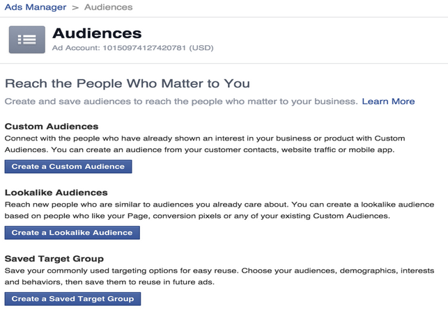

-
6 Steps to a Sweet Quiz (and How to Make It Viral) [Webinar]
A couple of months ago, BuzzSumo and Qzzr got together to talk about quizzes, content marketing, and going viral—and how to use tools from them to do all three. Our one-hour webinar (embedded below) gave a lot of great tips and hints, but the crème de la crème had to be the six steps to creating a sweet quiz from our Chief Qwizard Owen and BuzzSumo’s Stephen Walsh.
>>Click to Tweet your thanks to Stephen!
So we thought, why not turn those steps into a step-by-step list in a blog post so you can refer to it again and again when you make a quiz? Let us give you the meat and potatoes—and if we leave you wanting more, our webinar’s always there for a listen.

First questions first: why are quizzes the new golden child of content marketing? Sure, they’re a form of media. But why are they more popular than, say, infographics or surveys or a plain old blog post? It’s because quizzes are engaging and nourishing. We can interact with them and—lo and behold!—they interact back. They feed us by telling us things about ourselves. As humans, we are our own favorite subjects.
So to all the brands, marketers, and publishers out there: make us feel good about ourselves, make us laugh, and give us something to brag about. And when you do, we’ll interact like crazy—to the tune of 82% conversion rates.
The 6 Steps to a Sweet Quiz
1. Do your research
The best quizzes come from content that gets shares—content that resonates with its readers, spawns controversy and questions, or is easily misunderstood. So making a great quiz comes from understanding the content. Look at your old content with a fresh eye. Lists, infographics, posts with lots of comments—why can’t they be turned into quizzes?
This is also where BuzzSumo comes in. Using their tool, you can search topics and websites (even adding “quiz” or “?” after the terms to limit your results to quizzes) and see what’s being shared across the internet. Stephen made a great point during the webinar that recycling content for quizzes from checklists or how-to’s is incredibly easy. Get an idea of what’s out there—and how you make it even better.
2. Choose your quiz
There are two types of quizzes: graded and outcome. Your graded quizzes have titles like “How well do you know ___“ or “Are you a ___ expert?” and outcome quizzes are more along the lines of “Which superhero are you?” and “What color is your personality?”
Graded quizzes are about making people feel good about their score and educating as you go along. Assign outcomes like “You got 90%! You’re a genius!!” rather than simply “You got 90%”, and use the feedback option in Qzzr when you’re creating a quiz to throw in more interesting facts.
Outcome quizzes, on the other hand, need shareworthy resolutions. They should be designed with results that make people feel good and look good by helping people define themselves, invoking awe or laughter, or helping people share how they want to look to their friends.
Something surprisingly often overlooked in quiz creation is the importance of the title. It’s the first thing your potential quiz taker will see—so make it good. Good content always needs to have a hook, and that hook for a quiz is the title. BuzzSumo can help by showing you the most popular quizzes (hint: a lot of them have “hardest” or “ultimate” in the title).
We’re big on interactive content here at Qzzr, so we want to ask you: do graded quizzes or outcome quizzes sound more appealing to you? Take the poll (made with our sister tool Pollcaster) and see what other people chose.
3. Strategize your call to action
People use quizzes in content marketing for lots of reasons. So what’s yours? Are you trying to generate leads? Make a sale? Gain more newsletter subscribers? Get more traffic? Defining your reason for wanting a quiz determines the call-to-action, which in turn helps you design your quiz.
First, understand the persona of your audience. Use BuzzSumo to look into the space you’re targeting and find topic ideas. Always focus on what your audience cares about or what both you and your audience care about jointly—otherwise you lose them.
Next, define the outcomes of your quiz. Make it something that people are proud to share. And make sure your call to action, whether that’s putting in an email address or linking to another blog post, is related to that outcome.
4. Make your quiz
Unfortunately, we don’t have a secret recipe for the perfect quiz (don’t worry—we’re working on it). But in the meantime, here are some guidelines for you to follow in your search for virality:
> Show me something cool.
Keep me engaged by asking me interesting questions (quality over quantity)
> Show me something meaningful. And convince me it’s meaningful.
Make me feel sufficiently assessed. I won’t believe that you really know who I am or who I should be if you’ve only asked me three questions.
> Feed me and give me something to brag about.
Give me feedback. Tell me if I’m right or wrong and then give me something else interesting. And in the outcome, tell me more about myself.
> Make me laugh.
This quiz is a perfect example of making people laugh. We usually suggest people make positive outcomes—this quiz went the opposite direction and made the outcomes hilariously offensive. It worked—it’s been taken over 200,000 times and people love sharing their [sometimes painful] results.
> Make me an offer I can’t refuse.
This ties back into the call-to-action. Basically, tell me who I am and then tell me why I want what you have to offer me, whether that’s another blog post to read, an offer or newsletter to sign up for, or a drawing to enter into.

Make sure to use images. We’re visual beings and we want to be shown things. Equally important, images need to be licensed to be legal for commercial use. So if you’re a bit short on pictures, you can do a Google Image search and filter using Advanced Search to only find those labeled for reuse. For more info, see our post on Images and Qzzr.
5. Share your quiz
Now that your quiz has been made, share it with the world! Put it on your blog and social media. BuzzSumo can also help you step up your game here too. Search your topic (or even rival quizzes on your topic) and click “View Sharers” for a certain piece of content. Find the influencers with high domain authority and retweet ratios who shared those pieces and ask if they’d be interested in sharing yours too.
6. Learn, adapt, and improve it
The best part of using Qzzr to make a quiz is the analytics that come with it. Test different quiz titles, questions, and outcomes to see what appeals to your target customer.
There you go—that’s the distillation of our webinar in partnership with BuzzSumo. Good luck going viral and merry quiz-making! We’ll leave you with a few last surprising facts we learned from Stephen and Owen:
- Generally, five influencers with a retweet ratio of 2 or higher sharing something is what it takes to make it viral.
- The average quiz gets 1,900 shares and 84% of those shares are on Facebook.
- The #1 NYTimes article in 2013 was a quiz. And in case that’s not recent enough for you, nine out of ten of the most shared stories on Facebook in January 2015 were quizzes.
For more great tidbits you probably didn’t know (and to hear some of Owen’s terrible puns), listen to our webinar with BuzzSumo in its entirety.
-
Use This Guide for Global (Quiz) Domination
In this post:
-
International marketing is now easier—and more difficult—than ever
-
Tips for creating international quizzes
-
With Qzzr, global quiz creation is now available in 14 languages
This guide will help you create interactive content in an international world, but many of these global quiz techniques apply directly to overall marketing and content creation as well.
Disclaimer: Use the advice inasmuch as it makes sense to do so, but never take anything as a hard and fast rule. Every country and culture (and the many subsets within) is different, and the moment you assume anything, you lose the indispensable ability to adapt.
In the old days (pre-Kardashian), when a tech company decided to expand globally, it usually meant one of two things: (1) domestic business had stabilized to the point that taking on the risks of moving into new markets seemed justified, or (2) they were bat-sh** crazy.Today, our environment couldn’t be more different. The expansion of the internet and web-based SaaS tools has all but eliminated most of the barriers preventing expansion into international spaces. Potential foreign customers are looking for you before you can look for them. There’s one rapidly-growing market, and everyone is playing in it.
That doesn’t mean it’s easy, however—especially in the marketing world. The mere ability to reach out and tap people on the other side of the world in seconds doesn’t mean that they’ll want to listen to—or be able to understand—what you have to say.
Consider these tips when building a global quiz strategy:
1. Find boots on the ground

Don’t try and do this alone, and from a different country. Find someone local that loves your brand as much as you do, and who brings the right blend of creativity and technical skills to the table. Don’t skimp on payment, as this person or team of people will be the backbone of your operation.
2. Do your research
With any marketing campaign, research is important. When trying to get a marketing effort off the ground in a new country, research is essential. Quiz creation is no different. While there are certain techniques that will translate to any campaign, you’ll find that many (if not most) of the normal methods will need at least some adjustment.
There are an innumerable amount of factors to consider, but begin your effort here:
Personas
Who is your ideal customer and how will they interact with your brand? Address differences in organizational structure, decision making, and budgetary management. It’s possible that the job titles and roles that you targeted domestically don’t exist in a new culture, or that they handle different responsibilities.
Your ideal customer may also have very different challenges than what you’re used to. You need to identify the individual pain points and evaluate how your product or service can resolve them. This will determine how you structure your content, and how they’ll perceive it.
It’s also very possible that they find information in a very different way than you’re used to. Whereas before you had a lot of success promoting quizzes on social media, you may find that these channels are dry in a new environment.
There has been much written on the practice of defining buyer personas, so I won’t go into more detail. Buffer has a great guide, as does HubSpot—and a great article from Forbes. What’s important is that you use them. Don’t try and get by on your existing personas, or worse—on winging it. Take the time to understand your new audience, and your quizzes will be much more successful.
Competition
Who else is present in your market, and how will their offerings affect yours? Find gaps and use these in your quizzes and other content. If you provide a necessary service, make sure you use that fact in your messaging.
Cultural considerations
Everyone has heard a story or two about an over-eager salesman blowing a major deal by inadvertently insulting his foreign hosts. Don’t let that be you.
Quizzes are by nature interactive—they require customer involvement. While there is incredible opportunity for engagement and conversion there—and we’ve obviously built our business around that—their involvement means you have to consider what is going to attract and repel potential customers in your new area.
Social networks
While Facebook is the definite worldwide leader in social media, it’s not the top dog everywhere—Japanese Twitter users outnumber Facebook accounts by nearly 4 million, and that divide is likely to widen. And did you know that Twitter is only the fifth most popular social media network in the world?
Find out where the important conversations are taking place and position yourself there. Test to find out where people are most likely to share, then center your quiz promotion there to drive social traffic and generate leads.
Techniques
You’re entering a new space, where new temperatures, attitudes, and preferences prevail. Your old bag of tricks may not cut it—whether you’ll need to adjust tactics isn’t the question, it’s how much and in what ways.
You may have to find out whether quizzes resonate better within your content marketing or social media strategies. And an accurate understanding of email usage will go a long way towards determining how much time and resources you need to spend on email marketing.
Also consider the cultural perception of things like jokes—while your sense of humor may be your greatest asset in building relationships and communities for your brand, it’s going to be a lot harder to convey that through a translator. Even in your native tongue, humor can differ from region to region (see “Bean, Mr.”).
Web consumption habits
You’ll want to identify how people use the internet. Find out a breakdown of mobile/desktop usage, and this will help you construct your content. If you’re using a quiz platform like Qzzr, no need to worry! Quizzes are all responsive, all the time, meaning they’ll look great however people consume them.
While this is becoming less of an issue worldwide, consider your audience’s access to internet. In many places, the majority of people use the internet in cafes or have limited bandwidth. If either of these is the case, consider limiting the length of the quiz or keeping hi-res or animated images to a minimum.
3. Be human
Cultural differences aside, we are all still human, which means we need to engage with our customers as such. If done right, quizzes engage people in a peer-to-peer manner, because they’re playing against themselves—or their own perception of themselves.

This will greatly affect how your brand transitions to a new culture, and testifies to the need for great people on the ground. Don’t waste an engagement opportunity by sounding like an inanimate (foreign) entity.
4. Have the right tools
If you have the right tools, international expansion will be much easier. In another recent Forbes post, online entrepreneur John Rampton shared a list of tools to use when managing an international team.
While communicating with a team of people whose first language is not that of your business, you’ll obviously face challenges. But above and beyond that, you need to make sure they’re able to understand and use the tools involved in their day-to-day operations. Make sure their tools speak to them in their own way—you can’t afford not to. They won’t use what they don’t understand, and at this point, your endeavor is substantially dependent on data.
The list will be very industry-specific, but start with your CRM, marketing automation platform, email marketing and—obviously—quiz creation tool. All of these will play into how successful your campaign will be. Your quiz will be affected by how well preparation, execution, and follow up are tracked, so make sure your data integrity is on point.
Cool note: Did you know that Qzzr is multilingual? You can currently build quizzes in several different languages—14 to be exact:
- English
- Chinese Simplified
- Dutch
- French
- German
- Italian
- Japanese
- Norwegian
- Portuguese
- Spanish
- Swedish
- Russian
- Polish
- Serbian
5. Images
Just two quick notes on images. First—use them. Second—make sure they reflect your new environment. A quiz is not going to be nearly as engaging if it’s filled with imagery that looks foreign or impersonal.
Don’t let this happen:

This is not just about race—though you should consider that. There are landscape/environmental variances, demographic factors, and overall cultural themes that will either make your campaign stick out like a sore thumb, or seamlessly integrate with the consumer’s life. Don’t blow the powerful engaging feeling of a quiz by using images that alienate or confuse.
6. Test and improve
What you need most is the ability to adapt to new circumstances, like some sort of highly intelligent mutant quizzing chameleon—yeah, like that. Test mercilessly and endlessly to determine your best course of action. Play with brand voice, images, quiz types and topics, and time of launch to determine your best playbook. You’ll know when you get it right—your share rate will reflect it.
Conclusion
Expanding into new markets is not easy—but don’t let it discourage you. It can be done, and the rewards are many. Put in the hard work, and you’ll start to reap the benefits of global quiz domination. But please, use your powers for good.
Resources:
-
-
How to Make a Quiz (Then Make it Rain!)

We had an awesome webinar last week with Nicole Kroese from Likeable Local. Jokes were made, fun times were had, and a whole heap of helpful information was imparted. We learned that Owen would look great in a double-strap tankini and that Nicole is a dancer – but most of all, we learned how to make a quiz and intelligently promote it to double your social engagement and conversion. Yeah, heavy stuff.
>>Want to make a quiz? Sign up for a free account and work along with us!
Feel free to watch the webinar, or check out the slides – both were posted immediately after the webinar.
Why make a quiz to promote your brand?
Quizzes are at the forefront of a content renaissance. The internet is flooded with content, and most of it not very good. Your goal as a top shot marketer is to help yours cut through the fog and stand out.
Surveys, infographics, and lists are great and all, but quizzes hold more potential than many of today’s other popular content types. Luckily for you, we’re going to show you precisely why.
Aren’t quizzes just the same as surveys?
No – here’s why:
Surveys come wrapped in desperation

While very similar in nature, quizzes capture people’s attention and draw them in – they can’t get enough! The proof is in the pudding: the New York Times’ most shared article in 2013 was a quiz, and nine of the ten most shared posts on Facebook in January 2015 were as well.
So why are quizzes so irresistible?
We think it’s because they’re so engaging and nourishing. We can’t wait to get a result and find out something interesting about ourselves.
Quizzes have an 81% completion rate – people stick with them. The questions act like an interesting conversation, which drives them to share little bits of themselves in order to learn more. What’s more is that 82% of people will take a quiz if they see it in their social feed. So you post a quiz – on average, 82% of the people that see it will start it, and 81% of those people will finish it.
Is that not impressive enough for you? The average quiz takes roughly two and a half minutes to complete (which does wonders for your SEO), and is shared over 1,900 times (which is pretty good, if we say so ourselves).
All of this combines to make quizzes faster, cheaper, and more effective than almost any other type of content.
Social media and content mavens have two goals:
- Drive traffic
- Drive conversions
Here are some examples of quizzes that have done that:
News site KSL.com created a quiz to test people’s knowledge of the US Citizenship Test. It’s been been taken over 137,000 times (!) and the comment board got lit up.
CarThrottle is an online automotive enthusiasts’ community. They posted a quiz, Are You a True Gearhead?, and it’s been taken over 300,000 times – at the time of this writing, it had 473 comments. If that’s not traffic, I don’t know what is.
Online optics company Zenni Optical launched a quiz to help people find the eyeglass style that best represented them. Questions drew out information on color, lifestyle, and face shape to provide an accurate recommendation. It has worked – to the tune of nearly $1 million in revenue, and climbing.
So, how do I make a quiz?
Research topics
You can make a quiz, or you can make a great quiz. Studying great content can give you insights into what will perform well for you. Ask these questions to set yourself up for success from the get-go: What’s trending right now? What topics have been successful for you in the past? Have any of your competitors made quizzes before? Which topics have been most successful? Are there decisions that people struggle to make? We don’t get any kickbacks from Buzzsumo for saying this, but we’ve found their tool extremely helpful for research on buzzworthy topics. Try it out and see if it’s any good for you.
Choose quiz title and type
Your title is your quiz’s headline, so the same thought should go into it. You want to engage people – make them want to drill in and get a result. There are two quiz types: graded and outcome. Graded quizzes follow the traditional quiz archetype – they have right or wrong answers. The end result of a graded quiz is a percentage (You got ___% of the questions correct). An outcome quiz does not have right or wrong answers; it’s questions gather information to lead to – you guessed it – an outcome (You got “AC Slater” in the “Which Saved By The Bell character are you?” quiz). Here are a few quiz title examples given for each quiz type:
 If you’d like more information on what each quiz type offers, we’ve written before with a bit more detail.
If you’d like more information on what each quiz type offers, we’ve written before with a bit more detail.Do your research and gather media
This is where you’ll strategize your quiz content. If you’re creating a graded quiz, you’ll need a lot of facts. If it’s an outcome quiz, be strategic and fun about how you ask for information. Example: In your “Which farm animal are you?” quiz, don’t ask “Which food sounds good?” and then show pictures of hay, corn, oats, etc. Come up with another way of getting responses that aren’t so obvious and boring. Images must be used in accordance with all copyrights and restrictions. Here’s a resource on finding images for quizzes, and DesignRope has a great blog post with 14 places to find stock photos that don’t suck.
Create and embed
If you have all of your stuff together, this is the easy part. Use a platform like Qzzr to make life easy on yourself, and you’ll be impressed with the imagery as well.
Share and promote
This was where Nicole and Likeable Local’s expertise really shines. Content used to promote itself – you could create a website and throw some words and pictures on it, and people would come to it. Not anymore. For one thing, the internet is now inundated with clutter. “Content” is everywhere, and it can be hard to cut through the fog to be seen by your prospects. In addition, things like “Facebook Reachageddon” made us pay to play. It’s now necessary to open up the wallet to make sure your posts get seen. It’s not all doom n’ gloom, though. If you create high quality and relevant quizzes, and promote them well, they WILL pay off. Here’s where more research pays off: (Are you detecting a theme?)
 Social media has a 100% higher lead-to-close rate than outbound marketing, so spend the bulk of your time there. Use these two ways to get your content in front of the right prospects:
Social media has a 100% higher lead-to-close rate than outbound marketing, so spend the bulk of your time there. Use these two ways to get your content in front of the right prospects:- Run awesome paid social ads
- Create and expand your fan club
Run awesome paid ads
Unless you want to waste your money, follow these bits of advice when creating ads:
Set goals – But not the generic ones like “I’d like to be successful with this campaign.” Nah, you gotta set SMART goals.
 Some of this is already built into the social ads platform. Do you want your ad to:
Some of this is already built into the social ads platform. Do you want your ad to:- send people to your website?
- increase conversions on your website?
- boost your posts?
 Reach the right people – Here’s Likeable Local’s founder, Dave Kerpen, on reaching the right people:
Reach the right people – Here’s Likeable Local’s founder, Dave Kerpen, on reaching the right people:You know what’s cooler than reaching 1 billion people on Facebook? Reaching the perfect 1000. Or 100. or 10. — Dave Kerpen (@DaveKerpen) March 18, 2013
One way to do this is by creating smart audiences. Facebook allows you to build wide profiles of potential customers by adding particular demographic, interest, job title, or location filters. The robustness by which you can find the right people is really cool, actually.

Scale smarter – Don’t run before you can walk. There’s no need to. Follow these three pointers:
- Double down on what’s working
- You may be sick of your ad, but your prospects aren’t
- Adapt to current trends
Create and expand your fan club
If what you’re bringing to the table is truly meaningful and you can get it in front of people effectively, you WILL attract potential customers. Make sure that when they come to you, you’re prepared to turn them into raving fans. Here’s how you can do that:
Choose a strategic partner – A good partner means doubled promotion and visibility. Even more so if you find someone with a larger reach than you. Look for thought leaders in your industry, and complementary companies (those that don’t directly compete with you for customers, but that contribute different value).
Make sharing easy and fun – All content should have a call to action, preferably to share. Cool new tools like Click to Tweets make it easy for readers to share a pre-designed tweet.
Listen and respond – Track keywords, hashtags and mentions that affect your industry or brand, and respond to everyone, because…
Social media is the new word of mouth – 90% of people trust business recommendations from someone they know, and people are 4X more likely to buy when referred by a friend. If this is true, then you know the inverse is true as well – so make sure you promptly address negative comments as well.
Social ads, shared posts, and popular content have built in endorsements from friends – potential customers will see reference to friends who have liked your page or content you’ve shared.
Conclusion
Quizzes hold immense power to engage and convert your potential customers, but like any other content, they’re only effective if people see them. Luckily, there are experts like Owen and Nicole, who love sharing the tips and tricks that have made them and their companies successful.
For a more detailed approach at using social ads to drive conversion and revenue, download the ebook “Driving Success Through Social Media Ads.”
To learn more about how to build quizzes to generate and convert leads, check out “Are You a Qwizard?”
-
No Leads? Don’t Blame Your Content

You know your audience. You’ve done your research. Your copy is on-brand and edited to perfection. Your distribution strategy is proven to spread your content far and wide across millions of screens.
In short, you’ve created a shiny new piece of interactive content that you know your audience will love.
But what happens when it doesn’t perform as expected?
Before you waste your time nitpicking at all the little things that might be wrong with your individual piece of content – font size, headlines, and so on – I’m going to tell you to stop.
You see, the problem might not be with your content. The problem might be with your content experience.
So, how do you create a content experience that’s sure to help your content generate leads?
Crafting Your Content
Your content must be valuable, relevant and consistent. Equally as important, however, is that it must also tie back to your content marketing goals.
Every single piece of content you create should be accompanied by a clear plan outlining how it will help you get more views, downloads, subscribers, or whatever you’re trying to achieve.
For example, running a quiz “just for fun” is only a good idea of you want your audience to just have fun before they bounce. If your ultimate goal is to incorporate the quiz as part of a larger campaign — e.g., to encourage webinar registrations or eBook downloads — it’s not enough to just put up a quiz and hope for the best.
Ensure the quiz is engaging enough to complete to the end, and provide guidance as to what the reader should do next (more on that below). Have one goal in mind for the next step — don’t ask multiple things of your audience.
Once you’ve hooked your audience by having them complete the quiz, don’t just let them go! Supporting your awesome content with a killer content experience will help compel them to stay and eventually convert.
Building The Content (User) Experience
As intelligent and savvy as your audience members are, they don’t always know what they want. As a marketer, it’s YOUR job to make it easy for them to find out.
And do exactly that: Make it easy.
Think about IKEA’s shopping experience. You don’t just drop into IKEA and have to fight your way through a pile of furniture to find your Ektorp sofa— IKEA provides a clear engagement path that makes your shopping experience all the more delightful. You go exactly where they want you to and ultimately end up at the checkout.
Provide a similar engagement path in your content marketing. Do this by:
- Including targeted & contextual CTAs: Let’s say you write a blog post called “10 Advanced Marketing Tips”, but you include a CTA at the bottom of the post that reads, “Free eBook: Content Marketing for Beginners”. This doesn’t make any sense! Your CTAs should be as targeted and contextual to your content as possible to create a smooth content experience.
- Incorporating responsive design: One size doesn’t fit all. Make sure your audience is able to consume your content in the best format, regardless of device, time of day, or any other external factors.
- Organizing your content strategically: Don’t invite your guests to a messy home. Organize your content in a way that makes sense for your audience (e.g. by format, buyer persona, etc.) to help increase discoverability.
- Featuring recommended content: Use a content recommendation tool like BrightInfo to feature other awesome pieces of your content that are related to the subject matter of the content currently being consumed. If someone is reading up on tips to generate quizzes, chances are they’ll be more inclined to read more about it.
- Including appropriate visuals: There is so much data surrounding the effectiveness of visual content that it astounds me when marketers either don’t use images or don’t use images effectively. Take the time to find, produce and optimize images that enhance your content experience.
- Including social share buttons and a search bar: These features sound simple, but they’ll not only make your content easy to find and share, but will also help you gauge which kind of content your audience is more willing to consume.
Gating Content for Lead Gen
Once you’ve built your content experience with the considerations above, it’s time to start generating leads. The best and fastest way to generate leads from your content? Gate your premium content to capture your visitor’s information.
When it comes to choosing a “gatekeeper” for your content, there are a couple of options available.
- Landing Pages: Landing pages are great because they allow you to generate a compelling headline, more visuals, and can be optimized to improve performance. However, using a landing page usually involves removing your user from your content, which could create a leaky content experience.
- Pop-up or “overlay” CTAs: Overlay CTAs provide a much more integrated approach to lead generation as they can be placed just on top of a piece of content, creating that feeling of having something “just out of reach”. Using these types of CTAs also shortens the conversion path by skipping the step of waiting for the piece of content to arrive in your inbox — once the form is completed, it’s right there and ready for consumption.
I could go on about best practices for gating premium content, but at the end of the day, your method of capturing leads must be integrated into your content experience.
Put Your Awesome Content in an Awesome Experience
Don’t let your amazing content go to waste, and don’t underestimate the power of an amazing content experience.
Put your content in an experience that is designed to achieve your goals and easy for your users to follow. Then, give yourself a high-five as the leads start pouring in!
###
Victoria Hoffman is the Content & Community Manager at Uberflip, a platform that helps marketers create, manage and optimize content experiences at every stage of the funnel to boost engagement and generate leads. She also contributes to The Globe and Mail as a Gen Y Money blogger. When not talking social strategy, she can be found watching Netflix and eating pizza.
-
[Webinar] Likeable Local + Qzzr: How to Create World Class Quizzes
This past Thursday, we had a phenomenal webinar with Nicole Kroese of Likeable Local. She and our Chief Qwizard Owen Fuller sat down to discuss “How to Create World Class Quizzes and Get Them in Front of Your Perfect Prospects.” We’ll have a full recap post up early next week, but wanted to get the video and slides out now. Man, it was a good one.
How to Create World Class Quizzes and Get Them in Front of Your Perfect Prospects
{kind=link}